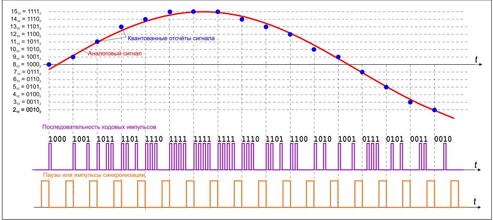
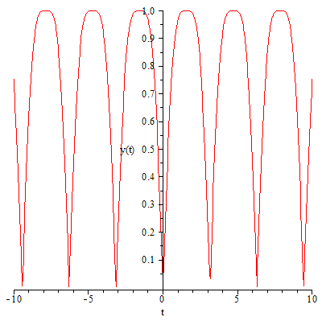
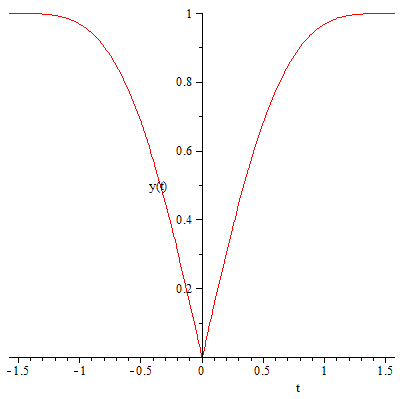
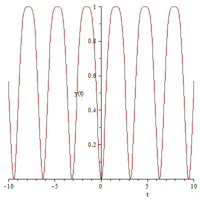
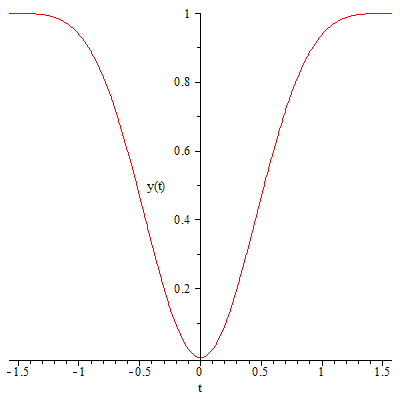
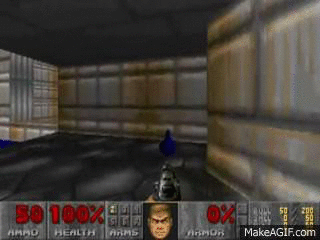

Egoshkin Danila Igorevich - student of DNU,
Faculty of Applied Mathematics
Fullscreen mode
Just press »F« on your keyboard to show your presentation in fullscreen mode. Press the »ESC« key to exit fullscreen mode.
Overview mode
Press "Esc" or "o" keys to toggle the overview mode on and off. While you're in this mode, you can still navigate between slides, as if you were at 1,000 feet above your presentation.
FPM 3D
Розробка моделей віртуальної реальності для створення середовища “ Віртуальна екскурсія по факультету прикладної математики ”
TOR
Terms of reference
Техническое задание
TOR Audio Core
OR
TOR Sound Core
Так, а чего я хочу o_0?
Базовые требования к API
PCM - ИКМ - Импульсно-кодовая модуляция
Before

PCM - ИКМ - Импульсно-кодовая модуляция
After
 https://en.wikipedia.org/wiki/User:KnightDanilaUse Case Diagram
Модели создания объемного звука
1. Head-related transfer function (HRTF) - CS:GO
2. Бинауральный эффект - всё ещё не реализован - Dolby Laboratories, Inc.
3. Эффект Доплера - OpenAL, Bass, ...
Web Audio - Схема Гатлинга
E:\Learn It\GAMES-Programming\Web-Programming\Audio\test
TOR Camer Core
Модели поведения камеры
Модели поведения камеры
1. Ключевые кадры + Морфинг - функция плавного перехода
2. Motion capture - захват движения
3. Процедурная анимация
diff (x (t), t) = -y (t),
diff (y (t), t) = x (t)
Общее решение этого уравнения будет иметь вид:
x (t) = C1 * sin (t) + C2 * cos (t),
y (t) = -C1 * cos (t) + C2 * sin (t)
x (t) = a * sin (t)
y (x) = abs (sin ((1/2) * Pi * x))
 
x (t) = a * sin (t)
y (x) = pow (sin ((1/2) * PI * x); 2);
 

TOR AI Bird
Модели поведения птиц
Виды искусственного интеллекта
1. алгоритмы
2. нечёткая логика
3. весовой граф
4. нейронные сети
5. генетические алгоритмы